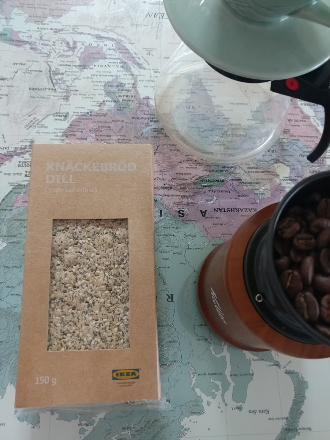
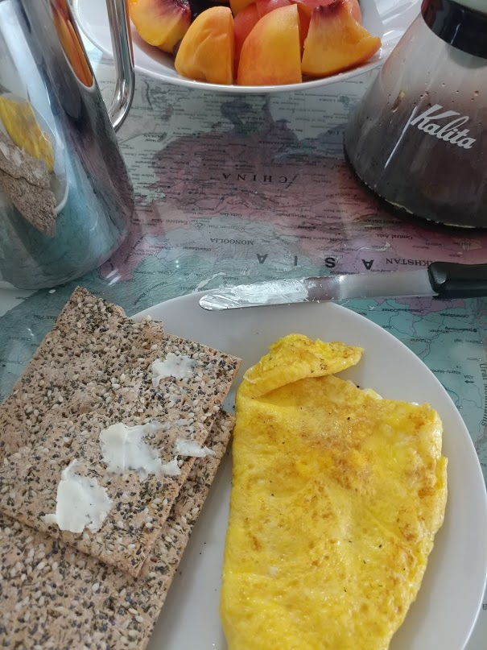
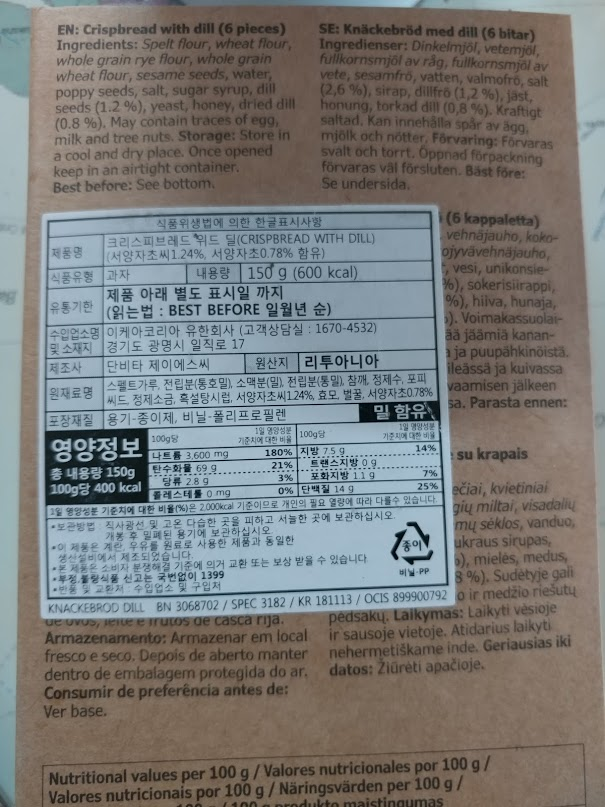
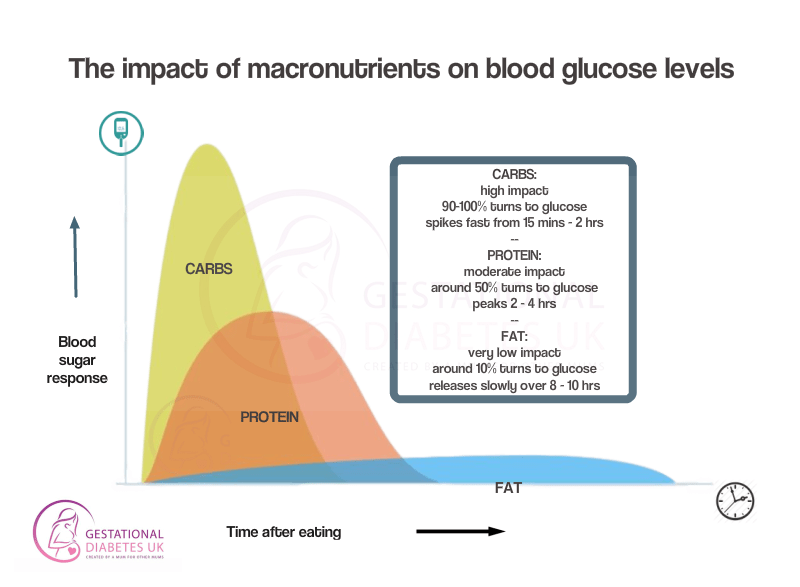
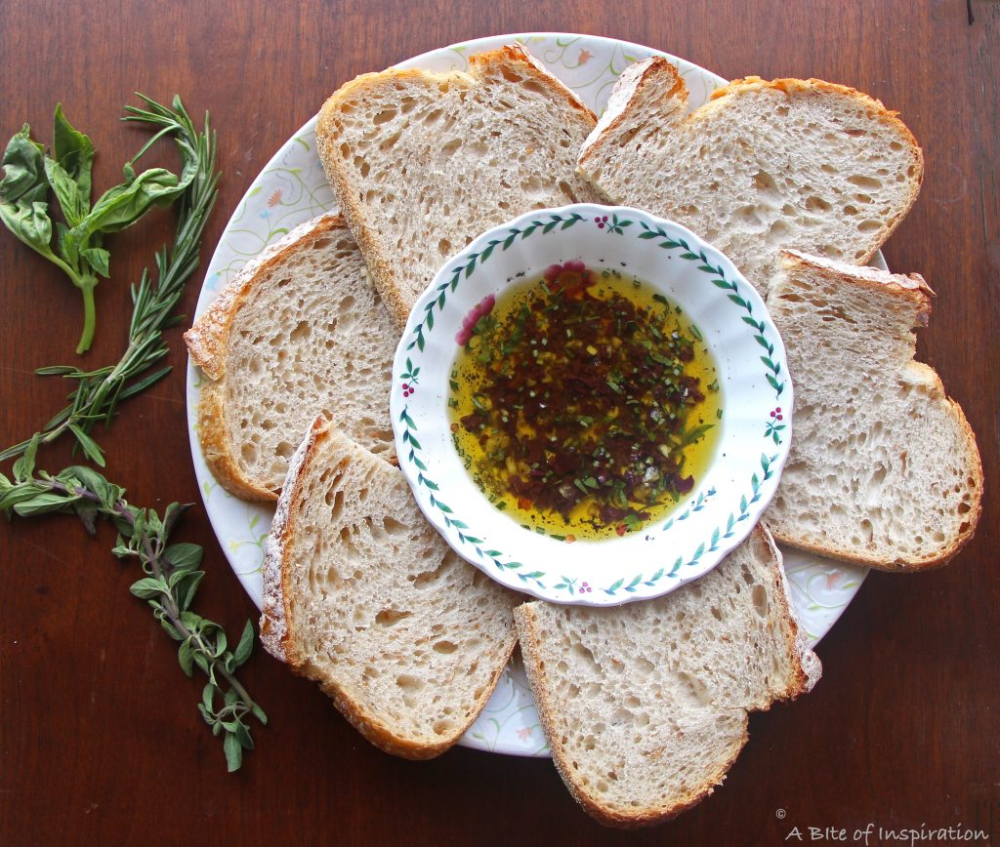
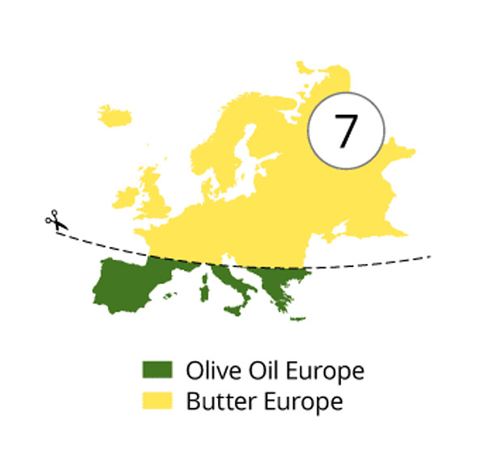

빵을 먹으면 배가 쉽게 꺼진다 ? - 크네케브뢰를 먹으며
게시: 2019-09-30T06:30:58+09:00
전에 스칸디나비아 지방에서 주로 먹는 크네케브뢰(knäckebröd, 덴마크어로는 knækbrød, 영어로는 crispbread)라는 빵에 대해서 간단히 적은 바가 있었습니다. (토르 라그나로크 - 바이킹들의 빵 참조) 최근에 이케아에 갔다가 결국 호기심을 이기지 못하고 작은 크네케브뢰 한 팩을 사고야 말았습니다. 영국의 피쉬앤칩스 같은 것도 아무리 맛이 없다고 해도 욕을 하는 것과 먹어보지도 않고 다른 사람들의 말만 듣고 욕을 하는 것은 분명히 차이가 있지 않겠습니까 ? (그래서 저는 피쉬앤칩스 욕을 하지 않습니다. 저는 아직도 비싼 생선인 대구를 튀겼는데 맛이 없다는 것이 믿어지지가 않습니다. 하물며 그냥 식빵이나 건빵도 튀기면 맛있는 법인데 말입니다.) 결론부터 말씀드리면, 맛있습니다 ! 이건 허브의 일종인 딜(dill, 겉봉의 설명서에는 서양자초라고 되어 있더군요)이 들어있어서 그런지 독특한 향도 나고, 그냥 밀가루 외에 통호밀 가루와 스펠트밀(spelt) 가루 등을 섞어서 식감도 좋고 맛도 그 자체로도 꽤 고소하고 맛있습니다. 한 20여년 전에 미국에서 만난 어떤 덴마크 청년(그때는 저도 청년)이 바로 이렇게 생긴 크네케브뢰에 버터를 발라먹던 것이 기억나서, 버터를 발라 먹어 봤습니다. 당연히 버터만큼 더 맛있었습니다. 심지어 이런 거 별로 안 좋아하는 와이프도 꽤 좋아하더군요. 다만 150g 한 팩에 2900원이니 꽤 비싼 편입니다. 대신 수분 함량이 매우 적으니 실제 들어간 곡물 양으로 따지면 일반 식빵에 비해 그렇게 비싼 편도 아닙... 네, 역시 비싼 편이네요.
 
열량을 생각해보면 파리바게트 보통 식빵이 440g짜리 한봉지에 가격은 2300원, 열량은 1210kcal(100g당 275kcal)인데, 이 크네케브뢰는 2900원에 150g에 600kcal(100g당 400kcal)입니다. 쌀밥 1공기 열량이 대략 250kcal라고 하는데, 크네케브뢰는 1팩에 6장이 들어있으니 1장에 딱 100kcal, 그러니까 2장반을 먹으면 쌀밥 1공기를 먹는 셈입니다. 햇반이 1개에 1000원이 채 안되니, 햇반보다도 비싼 셈입니다.

(이 크네케브뢰는 리투아니아에서 구웠더군요. 스웨덴 소설 밀레니엄 시리즈를 보면 스웨덴 제조업의 공장이 주로 동구 유럽에 있는 것처럼 묘사되더니, 정말 그런 모양입니다.)
보통 나이 드신 분들, 심지어 젊은 사람들조차 '밀가루 음식은 먹을 땐 배부르더라도 먹고나서 조금만 지나면 배가 쉽게 꺼진다'라는 믿음을 가지는 경우가 많습니다. 어떻게 보면 그게 과학적인 사실입니다. 왜냐하면 '배가 부르다, 배가 고프다'라는 것은 실제로는 혈당 수치로 나타나는 법인데, 밀가루와 같은 탄수화물은 먹고나서 단시간 안에 혈당이 확 높아졌다가 또 단시간 안에 확 떨어지는 특성을 보여줍니다. 그에 비해 단백질과 지방, 즉 고기류는 먹고난 후에 혈당이 서서히 올라갔다가 서서히 내려갑니다. 특히 지방이 그런 특성이 강합니다. 우리가 잘못 알고 있는 부분은 쌀밥, 특히 보통 먹는 흰쌀밥도 밀가루와 똑같은 탄수화물이다보니 역시 혈당 조절에 좋지 않고, 쉽게 배불렀다가 쉽게 배가 꺼지는 음식이라는 것입니다. 우리나라 사람들은 막연히 쌀은 건강에 좋지만 밀가루는 건강에 나쁘다고 생각하는데, 실제로는 그냥 둘 다 건강에 그렇게 좋지는 않은 것 같습니다.

그런데 음식에는 궁합이라는 것이 있지요. 구미에도 food pairing이라고 해서 그런 개념이 있더라고요. 서양 사람들이 말하는 궁합은 그들의 주식인 밀가루와 함께 어떤 것을 함께 먹어야 탄수화물의 특성인 급속한 혈당의 상승과 하강을 막을 수 있느냐 하는 것인데, 의외로 간단합니다. 가장 좋은 것은 올리브유에 찍어먹으면 됩니다. 그러면 빵이나 면을 먹어도 마치 단백질처럼 혈당이 서서히 올라갔다가 서서히 내려온다고 합니다. 그러고보니 유럽에서 가장 건강하게 산다는 이탈리아 사람들이 빵을 꼭 올리브유에 찍어먹더라고요 ! 스파게티에도 올리브유가 꼭 들어가고요.

그러면 제가 예전에 봤던 덴마크 청년은 그걸 몰라서 크네케브뢰에 올리브유가 아닌 버터를 발라먹었던 것일까요 ? 그런 food pairing은 비교적 최근에 널리 알려진 것이라서 당연히 모르긴 했을 것 같습니다. 그런데 건강에 별로 좋지 않다는 버터도, 밀가루와 함께 먹으면 (비록 올리브유만큼은 아니더라도) 올리브유처럼 혈당을 서서히 올렸다가 서서히 내려가게 하는 효과를 발휘합니다 ! 원래 유럽의 남북을 구분하는 경계선이 올리브유가 더 싸냐 버터가 더 싸냐라는 것으로 정해진다고 하쟎습니까 ? 그러니까 이탈리아나 그리스처럼 올리브유가 흔한 곳에서는 빵에 올리브유를 찍어먹고, 영국이나 덴마크처럼 올리브가 자라지 않는 곳에서는 버터를 발라먹도록 발전된 모양입니다.

유럽인들이 예로부터 혈당이 어쩌고저쩌고 하는 것을 알았을리 없지만, 경험상 그런 식습관이 결국 포만감을 오래 유지한다는, 즉 혈당을 적정 수준으로 오래 유지한다는 것을 알게 된 모양입니다. 이게 체중 조절 다이어트에도 굉장히 중요한 것이, 이렇게 혈당이 서서히 올랐다가 서서히 떨어져야 배가 쉽게 고프지 않으므로 그만큼 덜 먹게 됩니다. 올리브유와 버터 외에도, 탄수화물과 함께 먹을 때 좋은 식품은 견과류, 각종 씨앗류, 아보카도, 코코넛 오일, 치즈, 요거트, 콩류, 생선, 육류, 크림, 마요네즈, 두부, 계란 등이 있습니다. 그러고보면 우리나라 사람들이 '쌀밥을 먹어야 배가 쉽게 꺼지지 않는다'라는 것도 비슷한 개념으로 발전된 것이 아닌가 싶습니다. 생선과 콩류도 탄수화물과의 food pairing이 좋다고 하니까, 쌀밥과 생선, 된장 또는 두부, 콩자반 등의 조합이 경험상 배가 쉽게 꺼지지 않는다는 것을 우리 조상들이 눈치 챘던 모양이에요.
Source : https://www.gestationaldiabetes.co.uk/gestational-diabetes-diet/ https://www.gestationaldiabetes.co.uk/what-is-food-pairing/